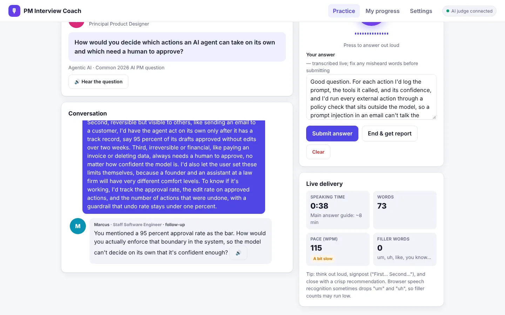
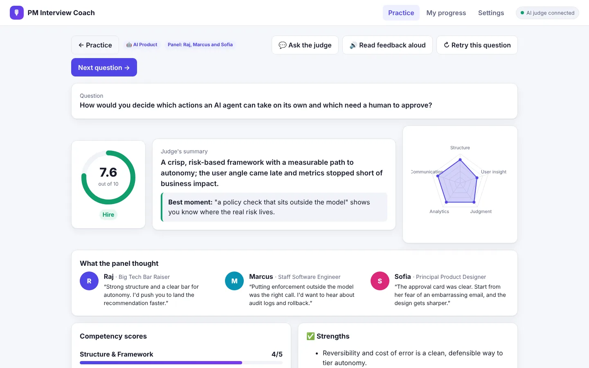
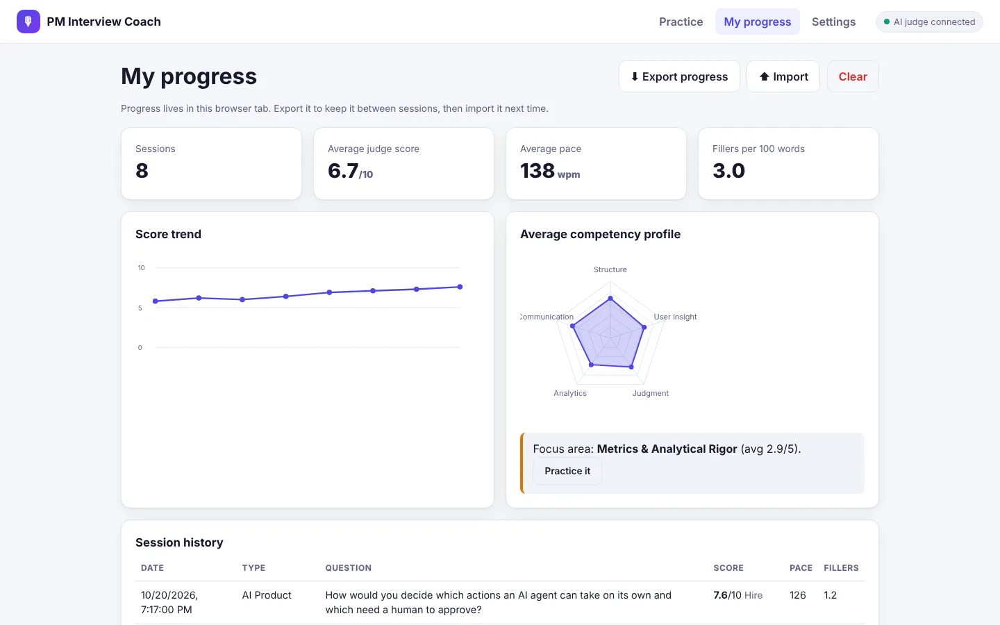
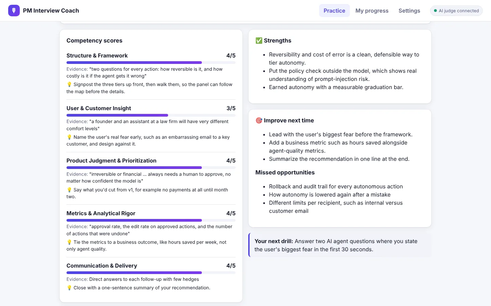

PM Interview Coach
An AI interview coach for product managers. You answer out loud, an AI interviewer or a whole panel probes your answer, and an AI judge scores it on five PM competencies and tells you exactly what to fix.
Works best in Chrome or Edge, where you can answer by voice. Without an AI key you still get live transcription and delivery feedback. Add a key in Settings, Groq's free tier works, to unlock follow-ups and scoring.



The problem
PM interviews are a spoken performance. You have to structure an answer in real time, say it clearly, and hold up when someone pushes on the weakest part of it.
Most practice doesn't look like that. People read frameworks and write answers down, then freeze when they have to talk through one live. Mock interviews with peers are hard to schedule, and the feedback is usually vague: "good structure, maybe more metrics." Nobody tells you that you said "um" every ten words, or that you never named a user.
Who it's for
Product managers preparing for interviews, especially AI PM loops, where questions about evals, agents, guardrails, and cost now sit alongside classic product design, strategy, metrics, and behavioral rounds.
How it works
- Pick the interview. Product Design, AI Product, Strategy, Analytics and Metrics, or Behavioral. Choose a question or let it surprise you, and choose a realistic mock or practice with hints.
- Pick your interviewer, or a panel. Six interviewers, from a friendly senior PM to a big-tech bar raiser, a staff engineer, and a principal designer, each with their own voice and focus.
- Answer out loud. The interviewer reads the question aloud. Your answer is transcribed live, with meters for time, pace, and filler words as you speak.
- Get probed. Up to three follow-ups, each aimed at the weakest part of what you just said. Ask a clarifying question and the interviewer answers with concrete assumptions.
- Get judged. An overall score out of 10, a hiring verdict, five competency scores with quoted evidence and a tip each, an outline of an exceptional answer, a stronger opening, and one drill for next time.
- Ask the judge. "Why did I only get a 3 on user insight?" Ask by voice or by typing, and the judge answers from your transcript.
- Watch yourself improve. A score trend, a competency profile, and a one-tap drill for your weakest competency.
Design choices
- A judge that doesn't flatter. Every score uses fixed anchors, where 3 means "meets the bar" and 5 is rare, and every score has to quote the transcript. A coach that inflates scores is worse than none.
- Delivery is measured, not guessed. Pace, filler words, hedges, signposting, and long pauses are counted in the browser from your transcript and timing. The judge receives the numbers rather than estimating them.
- Interviewers with a point of view. The engineer asks about latency, data, and build cost. The designer asks about flows, edge cases, and accessibility. On a panel, the AI picks who speaks next and spreads the questions around, like a real loop.
- Useful with no AI at all. Without a key you still get transcription, playback of your recording, delivery analysis, scripted follow-ups, and reference outlines. The AI adds probing and scoring on top.
- Your model, your data. Bring OpenAI, Azure OpenAI, Groq, OpenRouter, Together, Hugging Face, or a local model through Ollama or LM Studio. The key lives only in memory and is never saved, and your progress stays in your browser unless you export it.

My role
I designed and built PM Interview Coach as a personal project: the interview types and question bank, the interviewer personas, the scoring rubric and its calibration rules, the delivery metrics, and the prototype itself. I built it with Claude as my collaborator.
The same interviewers and rubric also run as a Claude skill, for mock interviews in chat and for judging a pasted transcript of a spoken answer.